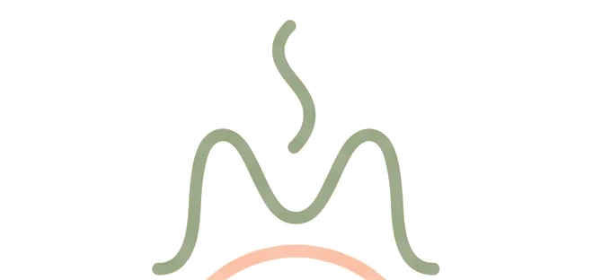
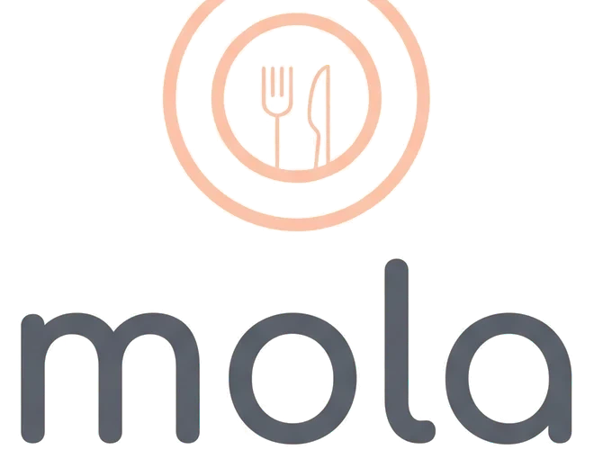

Twoje przepisy
Twórz ręcznie lub importuj z Thermomixa i innych stron. Dodawaj filmy z YouTube i sprzęt.


MOLA łączy Twoje przepisy, tygodniowy planer i automatyczną listę zakupów w jednej spokojnej, minimalistycznej aplikacji. Za darmo, w 5 językach.
Od pomysłu do talerza: zapisuj, planuj, kupuj i gotuj.
Twórz ręcznie lub importuj z Thermomixa i innych stron. Dodawaj filmy z YouTube i sprzęt.
Układaj przepisy w tygodniu i powtarzaj udane tygodnie.
Tworzy się sama z planu – z ostatnimi pozycjami, wieloma listami i udostępnianiem.
Szukaj po składniku, czasie lub sprzęcie: Thermomix, piekarnik…
Publikuj przepisy i zestawy tygodniowe, obserwuj twórców, oceniaj.
Profil i treści publiczne lub prywatne, zgłaszanie i blokowanie, usunięcie konta w każdej chwili.
Zaimportuj link lub napisz własny.
Wybierz, co gotujesz każdego dnia.
Lista tworzy się sama.
Publikuj ulubione przepisy.
Napisz do nas – odpowiemy w ciągu kilku dni.